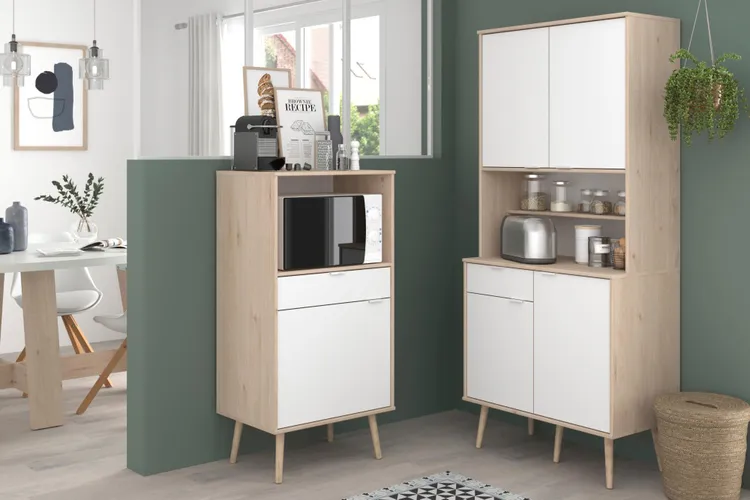
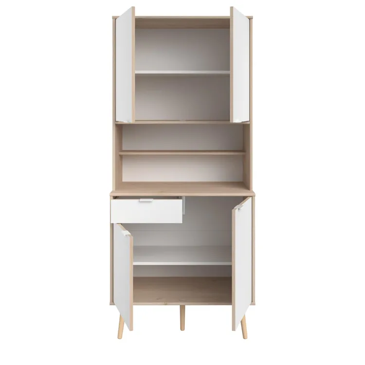
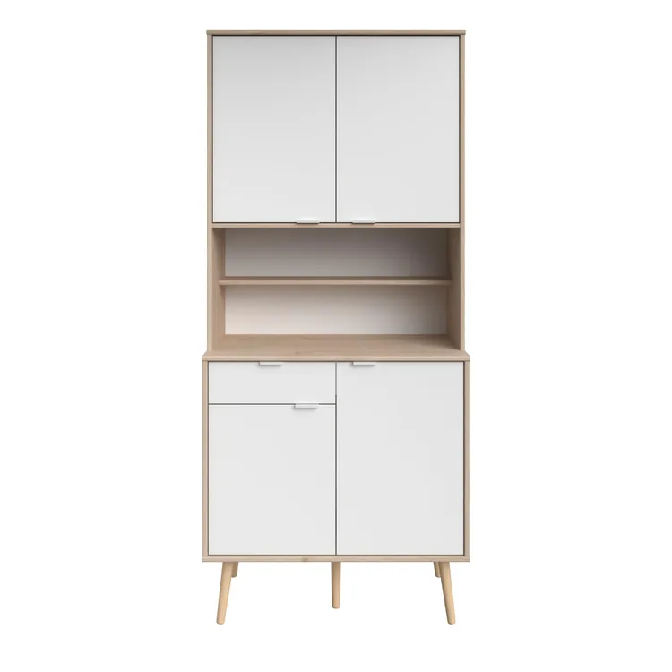
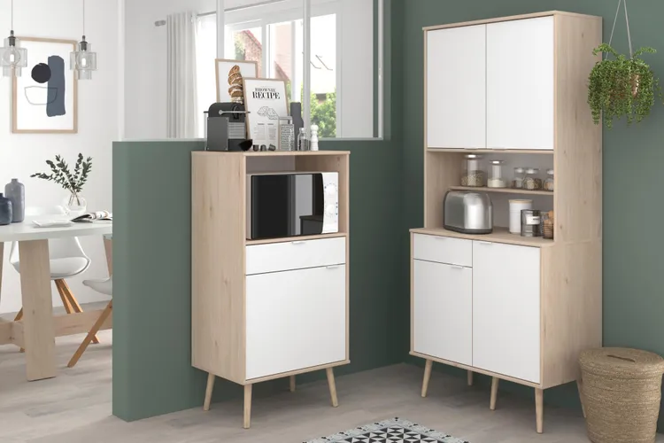
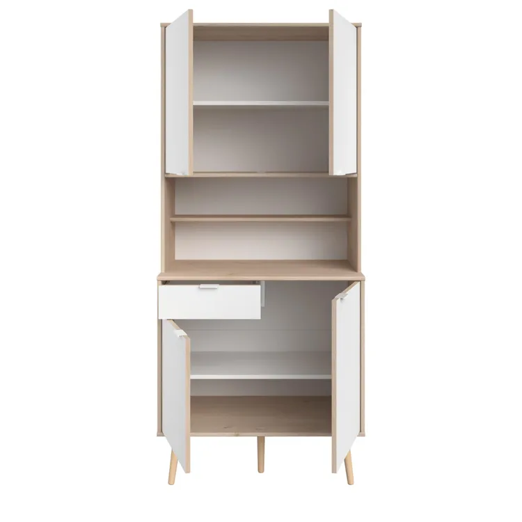
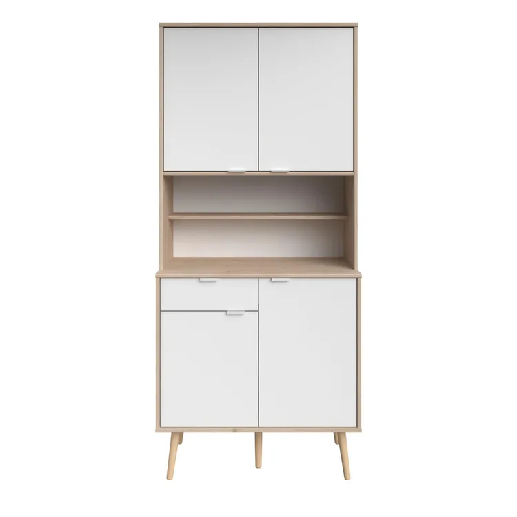

Móvel de arrumação de cozinha BRANCO 113.1 X 45.3 X 14.8CM
Descrição
Apresentamos o armário de cozinha Nordik, um produto de alta qualidade e durabilidade para equipar sua cozinha com estilo e funcionalidade. Fabricado com aglomerado de madeira certificada pelo FSC e PEFC, este armário possui uma largura de 80 cm, profundidade de 43 cm e altura de 184 cm, oferecendo ampla capacidade de armazenamento para seus utensílios e mantimentos. O acabamento da fachada é fosco e mate, em um elegante tom branco, que se integra facilmente a diversos estilos de decoração. O material da porta e do móvel é aglomerado de madeira, enquanto a espessura da porta é de 15 mm e a das arestas é de 16 mm. O armário conta com uma prateleira móvel, oferecendo opções de organização interna. Este armário de cozinha possui puxador incluído, em um design prático e moderno, além de ferragens e clips de rodapés para facilitar a montagem. Os pés do armário são em madeira e o sistema de abertura das portas conta com amortecedor, garantindo maior suavidade ao abrir e fechar. O armário Nordik é embalado em duas caixas de papelão, com dimensões totais de 108,1 x 15,1 x 79,6 cm e peso total de 46,1 kg. Com garantia de 3 anos do fabricante, este armário de cozinha é uma escolha confiável e sofisticada para equipar sua cozinha com praticidade e elegância.